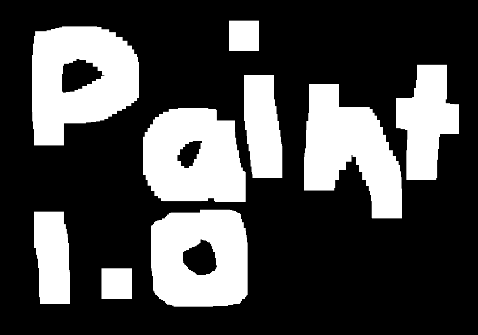
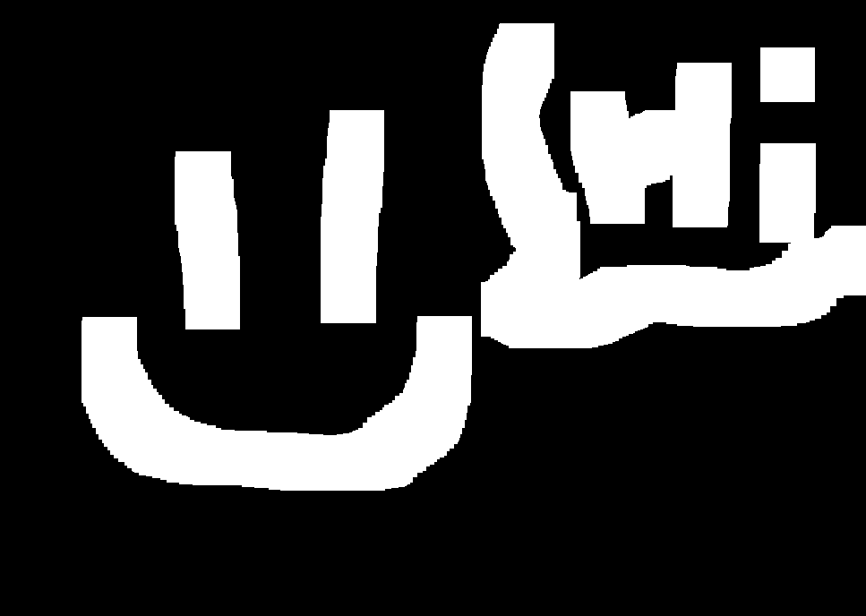

DT's Pong is an adaptation of pong that I made using Godot.
It currently has 2 modes. AI pong, where you play the game with a simplistic AI, and Local Multiplayer Mode, where you play using the W & A keys (left side) or the Up & Down keys (right side)
ScreenShots:


Download Painterupdates